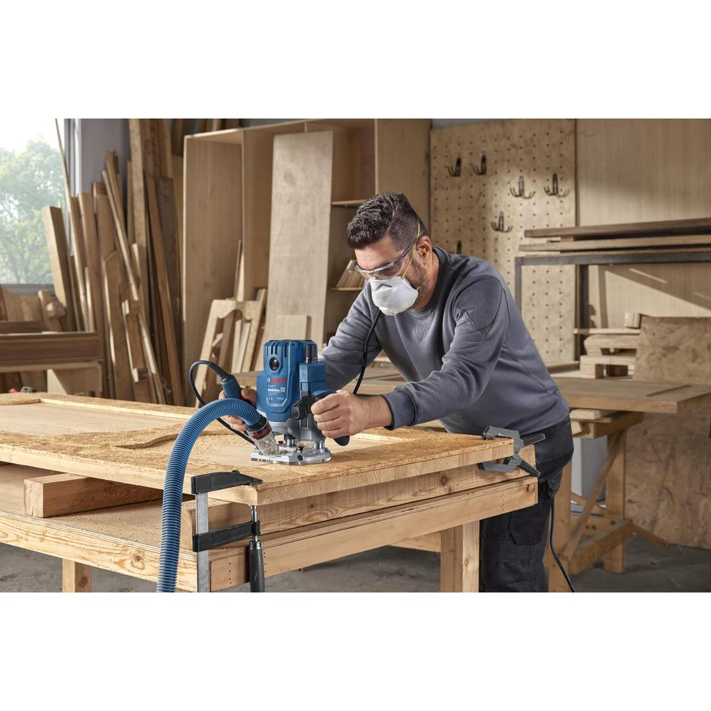
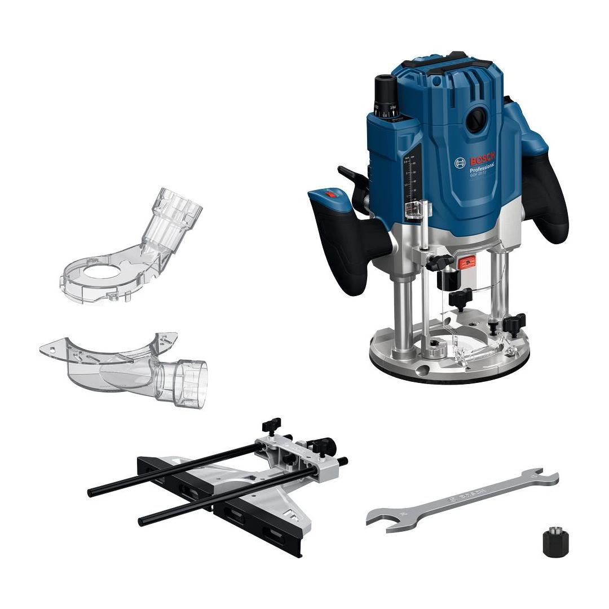
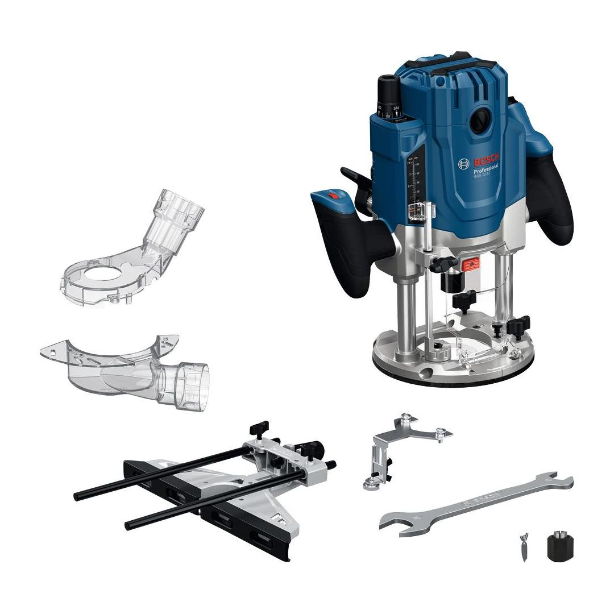

0601627220





| Noise level |
The A-rated noise level of the power tool is typically as follows: Sound pressure level 97 dB(A); Sound power level 105 dB(A). Uncertainty K= 3 dB. |
| Voltage, electrical |
230 V |
| Compatible collet diameters |
1/2'' 1/4'' 8 mm 12 mm |
| Rated input power |
2,000 W |
| No-load speed |
10,000 – 25,000 rpm |
| Fine adjustment |
16 mm |
| Tool dimensions (width) |
160 mm |
| Tool dimensions (length) |
309 mm |
| Tool dimensions (height) |
336 mm |
| Weight |
6.300 kg |
Smooth routing with high working efficiency
The GOF 20-12 provides a smooth and consistent routing experience during the demanding hardwood cutting tasks, thanks to its 2000 W motor, and constant speed electronics. What’s more, the entire system is held firmly in place with the tool’s robust design resulting in smoother operation and the After-lock micro depth adjustment mechanism that helps in stepless and accurate setup. The ergonomically angled soft grip handles help minimize fatigue
The GOF 20-12 router is ideally suited for high-power routing. Whether you’re cutting deep grooves, slots or rebates in hardwood, working with template guides, flush trimming plywood, or creating detailed edge profiles, this tool has the versatility to get the job done
The GOF 20-12 features speed dial on the left and lock on/off switch on the right handle, an easy to reach plunge lever and task-specific dust extraction adapters for both surface and edge routing.